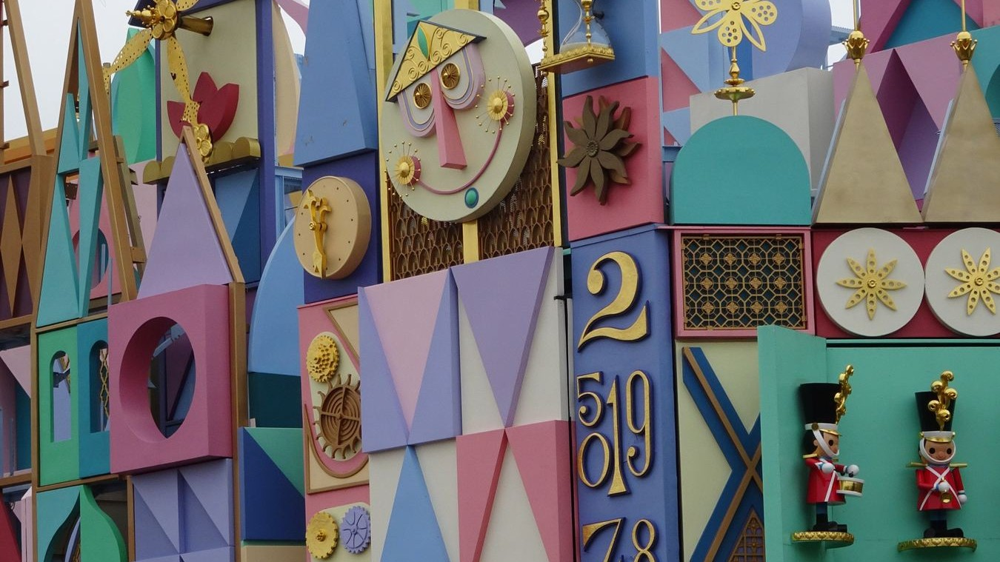
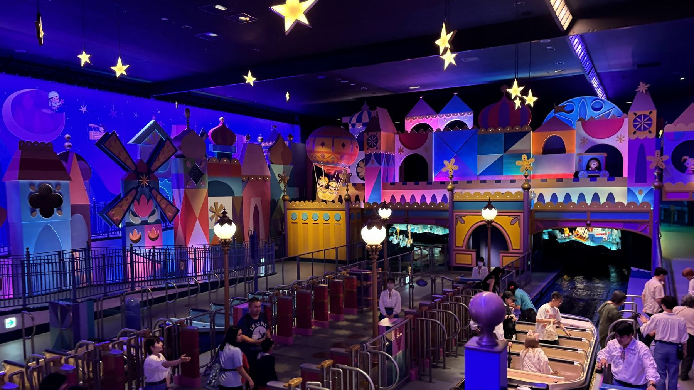
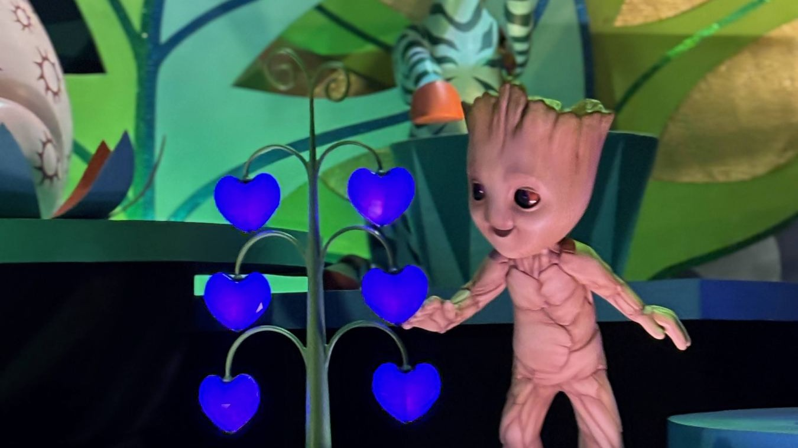
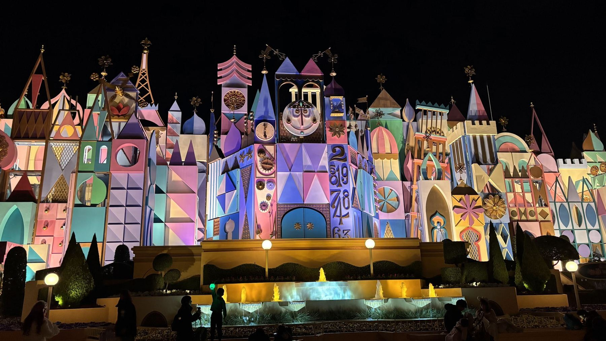

1964 New York World’s Fair
it’s a small world
世界をつなぐ平和の賛歌と

I. Core Philosophy —平和への願いと3つの基本理念
ボートがゆっくりと水路を進むと、岸辺から子供たちの歌が聞こえてきます。国によって衣装も歌う言葉も異なりますが、どの部屋に進んでも聞こえてくるのは同じ歌です。
世界の国々を巡るこの船旅には、誕生当初から平和への願いが込められているのです。子供たちの顔や衣装、歌声の一つひとつに、その思いが込められています。
① 人形たちの「同じ顔」に込められた意味
水路の両岸に並ぶ子供たちは、肌の色や髪型、身にまとう衣装がそれぞれ異なります。しかし、よく見ると、みな同じような顔をしているのです。
彫刻家ブレイン・ギブソンが手掛けた顔をもとに、イマジニアたちは各地の子供たちの姿をつくりました。万博の開幕までに多くの人形を完成させる必要があったことも、造形を共通化した理由の一つです。共通の顔を使いながらも、髪型や衣装には各地の文化が取り入れられました。
人種や国籍、文化が違っていても、私たちは同じ人間であり、誰もが平等です。互いの違いを認め、一人ひとりを大切にしてほしいというイマジニアたちの願いが、子供たちの同じ顔に込められています。
② 子供たちの視点から描かれた平和な世界
この小さな世界の中心にいるのは、大人ではなく世界各地の子供たちです。世界の人々が互いを尊重し、穏やかに共に暮らす姿を、子供たちを通して描くことが、この船旅の原点でした。
水路沿いでは、子供たちが故郷の衣装をまとい、動物たちとともに歌い踊っています。ウォルトが思い描いたのは、それぞれの文化を知り、親しむことのできる世界一周の旅でした。見慣れない風景や聞き慣れない言葉も、この世界では旅の楽しみの一つとなります。
言葉も暮らし方も異なる子供たちが、一緒に歌い踊る世界。ウォルトとイマジニアたちは、子供たちの姿を通して、国や文化の違いを越えて人々が心を通わせることのできる世界を描きました。
③ 運河を照らし続ける「太陽」の演出
ヨーロッパからアジアへ、そしてアフリカへ。水路の先には、その土地ならではの色や形で描かれた太陽があります。姿こそ異なりますが、世界の子供たちを照らしているのは同じひとつの太陽なのです。
II. Genesis of the Anthem —平和への祈りから生まれた旋律
今では世界各地のディズニーパークで親しまれている「小さな世界」。しかし、アトラクションの制作が始まったころには、まだこの歌は存在していませんでした。
1964年ニューヨーク世界博覧会での産声
この小さな世界の誕生は、1964年に開催された「ニューヨーク世界博覧会」にまで遡ります。ペプシ・コーラ社が協賛するユニセフ（国連児童基金）の展示として、ウォルト・ディズニーとイマジニアたちが制作を手掛けました。世界中の子供たちをたたえるための船旅です。
この博覧会が掲げたテーマは、相互理解を通じた平和でした。ウォルトは、各地の子供たちの文化を紹介する船旅を通じて、その願いを形にしようとしました。各国の風景を眺めながら、そこに暮らす人々を身近に感じられることも、この船旅に託された大切な役割だったのです。
わずか1年で生まれた世界
万博の開幕が迫るなか、イッツ・ア・スモールワールドの制作に与えられた時間は、1年足らずでした。
このとき、ウォルトのもとでは、すでにリンカーン大統領のオーディオ・アニマトロニクスを使った展示や、ゼネラル・エレクトリック社の「カルーセル・オブ・プログレス」など、複数の大型プロジェクトが進められていました。そこへ加わったのが、世界の子供たちのための船旅です。
メアリー・ブレアは色彩と風景を描き、衣装デザイナーのアリス・デイヴィスは各地の文化を人形の衣装に託しました。立体造形を担当するイマジニアたちは、平面の絵を実際に動く小さな世界へと変えていきました。
メアリーが描いた世界には、壁紙の切れ端や透明な素材、さまざまな布地を組み合わせたコラージュも用いられました。異なる素材が一枚の絵の中で調和する姿は、世界各地の文化がひとつの船旅を作り上げる様子にも重なります。
各国の国歌から、世界共通の歌へ
制作当初、世界の子供たちは、それぞれの国の国歌を歌うことになっていました。各国の文化を紹介する船旅としては、ごく自然な発想でした。
しかし、実際に音楽を流してみると、ひとつの問題が生じました。試聴では、隣り合う国の歌が次々に重なり、旋律が聞き取りにくくなってしまったのです。
そこでウォルトは、シャーマン兄弟に新しい歌の制作を依頼しました。世界中の子供たちが、それぞれの言葉で歌うことのできる、ひとつの共通の歌です。
当初は世界の子供たちに敬意を表する名称で呼ばれていた展示も、やがて新しく生まれた楽曲と同じ名前で親しまれるようになりました。
国ごとに異なる歌を歌うはずだった子供たちが、ひとつの旋律を共有することになりました。この制作過程そのものに、イッツ・ア・スモールワールドの理念が表れています。
平和への祈りを、明るい歌に
新しい歌を託されたのは、映画『メリー・ポピンズ』でもおなじみの、ロバート・B・シャーマンとリチャード・M・シャーマンの兄弟です。さまざまな言語に訳しやすく、繰り返し歌える簡潔な曲を求められ、制作に臨みました。
当初、シャーマン兄弟は、ゆったりとしたバラードを書き上げました。
この歌が生まれた背景には、1962年のキューバ危機がありました。アメリカとソ連の対立によって、世界が核戦争の危機に直面したばかりの時代でした。シャーマン兄弟が子供たちの歌に託したのは、国や言葉が異なっていても、互いを尊重し、大切にできる世界への願いでした。
楽曲の中心にあるのは、人間が誰しも抱く感情です。喜びや悲しみ、将来への希望や不安は、国境によって隔てられるものではありません。リチャード・シャーマンは、互いへの敬意と愛を願う子供の祈りとして、この歌を語っています。
ウォルトの助言を受け、曲は明るく軽快なテンポへと整えられました。言葉や編曲が異なっても同じ旋律を共有できるため、隣の風景から聞こえてくる音楽も、船の旅をつなぐ一部となります。
このシンプルで親しみやすい合唱曲は、世界各地の水路で流れ続け、史上最も多く演奏された楽曲の一つともいわれるほど広く親しまれるようになりました。
ニューヨークの空に踊った「四つの風の塔」
1964年、ニューヨーク世界博覧会のペプシ・コーラ／ユニセフ展示館には、ひときわ目を引く巨大な塔がそびえていました。その名は「タワー・オブ・ザ・フォー・ウィンズ（Tower of the Four Winds）」、日本語にすれば「四つの風の塔」です。
高さはおよそ37メートル。色鮮やかな飾りや幾何学的な造形が、風を受けてゆっくりと回転していました。
この塔を生み出したのは、イマジニアのローリー・クランプです。彼はもともと、小さな風車や回転する飾りを作ることを好んでいました。その遊び心が、万博会場の空を彩る巨大な作品へと姿を変えました。
塔の下では、世界中の子供たちが歌う小さな世界が広がっていました。空高く舞う色彩と、水路沿いに並ぶ人形たち。どちらにも、子供の自由な想像力を形にしようとする思いが流れています。
1964年から1965年まで続いた博覧会で、この船旅の展示館は1,000万人を超える人々を迎えました。世界中から訪れた人々が同じ船に乗り、同じ歌に耳を傾ける。その光景は、ウォルトが思い描いた小さな世界そのものだったのでしょう。
博覧会の閉幕後、イッツ・ア・スモールワールドはカリフォルニアのディズニーランドへ移され、1966年5月28日に再びオープンしました。万博会場の巨大な塔は移されませんでしたが、ローリー・クランプの幾何学的な造形への情熱は、カリフォルニアの新しいファサードにも息づいています。
III. Masters of Creation —平和を具現化したイマジニアたち
子供たちの顔をつくった彫刻家、世界各地の風景を描いたアーティスト、伝統衣装を仕立てたデザイナー、そして歌を生み出した作曲家。ウォルトのもとには、それぞれ異なる分野で活躍するイマジニアたちが集まりました。
Mary Blair／メアリー・ブレア — 色彩設計 / 美術デザイン
ウォルト・ディズニーにその色彩感覚を見出され、1960年代のディズニーの美術設計に大きな影響を与えたアーティストです。暗いトーンが主流だったアニメーション背景の世界に独特の幾何学的パターンと明るいパステルカラーを持ち込み、本作の「優しく幸福な世界観」を構築しました。彼女が手掛けた色彩や幾何学模様は、今もイッツ・ア・スモールワールドの大きな特徴となっています。
Alice Davis／アリス・デイヴィス — 衣装デザイン / 伝統織物の考証
世界各国の伝統衣装を人形のためにデザインした衣装デザイナーです。単なるデフォルメに留まらず、各地の伝統的な衣装や織物を参考にし、人形の大きさや動きに合わせて衣装を仕立てました。人形たちが身にまとう衣装には、それぞれの国や地域で受け継がれてきた文化が表れています。
Blaine Gibson／ブレイン・ギブソン — 人形造形 / 彫刻
ディズニーの数々のキャラクターや、歴代アメリカ大統領の人形の造形を手掛けた彫刻家です。アトラクションに登場する何百体もの子供の人形たちは、彼が手掛けた共通の顔の造形をもとに作られました。同じ顔をした人形たちが、それぞれの国の衣装を着て歌い踊っています。人種や国籍の違いを越えて人々の平等を伝える、イッツ・ア・スモールワールドを象徴する光景です。
Sherman Brothers／シャーマン兄弟 — 作詞・作曲 / 音楽
映画『メリー・ポピンズ』の楽曲を手掛けたことで知られる、ロバートとリチャードの作曲家コンビです。ウォルトから、さまざまな言語で繰り返し歌える曲の制作を託されました。こうして兄弟が生み出した「小さな世界」は、今も世界各地のディズニーパークで歌われ続けています。
メアリー・ブレアが旅した世界
メアリー・ブレアの色彩感覚をたどると、スモールワールドが生まれるよりも20年以上前の旅に行き着きます。
1941年、彼女はウォルト・ディズニーらとともに、メキシコや南米を巡る旅に参加しました。
現地の街並みや人々の衣装、豊かな自然に触れながら、メアリーは数多くの水彩画を描きました。この旅で育まれた色彩感覚は、その後の彼女の作品にも大きな影響を与えています。
『ラテン・アメリカの旅』や『三人の騎士』をはじめ、『シンデレラ』『ふしぎの国のアリス』『ピーター・パン』など、ディズニー映画の数々にも彼女の美術が受け継がれました。
そして1960年代、ウォルトは再びメアリーを迎え、世界中の子供たちが暮らす新しい世界の美術を託しました。
かつて自ら世界を旅した一人のアーティストが、今度は多くの人々を世界一周の船旅へと送り出すことになったのです。
衣装の裾に隠された工夫
世界各地の伝統衣装をまとった人形たち。その鮮やかな衣装には、見た目の美しさだけでなく、動き続ける人形ならではの工夫が隠されています。
アリス・デイヴィスは、人形の体が動くたびに布地がどのように揺れるのか、細かな部分まで考えなければなりませんでした。制作中、フランスのカンカンを踊る人形たちには、思わぬ問題が起こりました。勢いよく脚を上げる動作を繰り返すうち、人形の脚を覆う素材が傷んでしまったのです。
そこでアリスが選んだのは、膝の下まで届く長いドロワーズでした。小さな人形たちの衣装には、各地の文化を表す美しさと、絶えず動き続けるための知恵が織り込まれています。
絵から動きへ――もう一人のデイヴィス
この世界の誕生には、アリスの夫であるマーク・デイヴィスも携わっています。彼はディズニーのアニメーションやアトラクションで、数多くの登場人物の姿と動きを生み出してきたアーティストです。イッツ・ア・スモールワールドでも、登場人物のスケッチや立体化のための切り抜き模型を手掛けました。
船の上から眺めると、人形たちはただ立って歌っているだけではありません。体を左右に揺らし、腕を動かし、それぞれの土地で踊り続けています。
メアリー・ブレアが描いた色彩の世界に、衣装と立体造形、そして動きが加わる。異なる専門分野の仕事がひとつになって、歌う子供たちの姿が完成しました。
IV. Tokyo Voyage —東京で受け継がれる小さな世界
1983年4月15日、東京ディズニーランドが開園したとき、ファンタジーランドにはすでにイッツ・ア・スモールワールドがありました。ニューヨークで生まれ、カリフォルニアで育まれた平和への願いは、海を越えて日本にも届けられました。
そして2018年4月15日、東京ディズニーランドの開園35周年に合わせ、このアトラクションは大幅にリニューアルされました。新たに加わったのは、約40体のディズニー映画やディズニー＆ピクサー映画のキャラクターたちでした。『アナと雪の女王』のエルサとアナ、『塔の上のラプンツェル』のラプンツェルなど、映画で親しまれてきた仲間たちが、世界の子供たちと同じ風景の中に暮らすようになりました。新たに加わったキャラクターたちも、従来の人形に合わせた色彩や造形で作られています。
2017年3月1日からの休止を経て再び開いた水路には、『メリダとおそろしの森』や『ヘラクレス』の登場人物も加わりました。2018年当時、この二作品と『アナと雪の女王』『塔の上のラプンツェル』の仲間たちは、ほかのパークのスモールワールドにはいない、東京ならではの顔ぶれでした。
スモールワールド・ステーション――船旅の始まる場所
世界一周の旅は、ボートに乗り込む前から始まっています。イッツ・ア・スモールワールドの建物に足を踏み入れると、「スモールワールド・ステーション」という小さな駅が広がっています。
壁には世界各地の旅先を紹介するトラベルポスターが並び、子供たちがそれぞれの故郷で楽しむ姿が描かれています。天井を見上げると、薄暗い空にたくさんの星が輝き、手を伸ばして星を捕まえようとする子供の姿もあります。
ボートの乗り場の足元には、子供たちが捕まえた星の影が落ちています。頭上の小さな出来事が、足元へとつながっているのです。

駅の中にはきっぷ売り場があり、旅の荷物も残されています。子供たちはボートだけでなく、汽車や気球にも乗って、それぞれの冒険へ出発するところです。世界への旅が身近に感じられる、小さな駅です。
乗船場では、壁に描かれたミッキーマウスとミニーマウスが旅人たちを見送っています。そこに置かれたスーツケースも、これから始まる旅を思わせます。やがて船が静かに水路を進み始めると、駅の風景は遠ざかり、子供たちの歌声が近づいてきます。
世界を巡る五つの風景
ボートが最初にたどり着くのは、ヨーロッパです。
お城や風車が並ぶ街には、『シンデレラ』や『ピーター・パン』、『塔の上のラプンツェル』などの仲間たちも暮らしています。
船はやがてアジアへと進みます。日本や中国をはじめとする各地の伝統衣装や建築が並ぶなか、『ムーラン』や『アラジン』の仲間たちにも出会います。
アフリカでは、キリンやゾウなどの動物たちが子供たちとともに旅人を迎えます。『ライオン・キング』のティモンとプンバァも、この風景の中に溶け込んでいます。
中南米では『三人の騎士』の仲間たちにも出会います。船はその先で南太平洋の島々へと向かいます。そこには『リロ＆スティッチ』や『モアナと伝説の海』の仲間たちの姿もあります。
異なる土地へ進むたびに、建物の形や衣装は変わっていきます。しかし、どの場所でも子供たちの歌声は途切れません。
世界を旅する音楽――同じ旋律、異なる響き
イッツ・ア・スモールワールドの船旅では、ひとつの歌が途切れることなく流れ続けています。しかし、耳を澄ませると、部屋によってその響きが少しずつ異なっていることに気づくでしょう。
各地の子供たちはそれぞれの言葉で歌い、伴奏にもその土地の音楽を思わせる音色が使われています。同じ曲でありながら、国や地域によって異なる響きを楽しむことができるのです。言葉も文化も違う子供たちが、それぞれの声で同じ歌を歌う。船の上で聞こえるのは、誰か一人の声ではなく、世界中から集まった子供たちの合唱です。
ディズニー映画の音楽が加わった航路
2018年のリニューアル以降、東京の船旅では、映画の登場人物たちが姿を見せる風景の近くで、映画で親しまれてきた旋律が「小さな世界」の音楽に織り込まれています。
それらの音楽は、もとの歌を遮るのではなく、世界を巡る旋律の中に自然に重なっています。異なる作品からやってきた仲間たちも、この世界では子供たちと同じ歌を共有しています。
クリスマスを迎えた小さな世界
かつて東京のイッツ・ア・スモールワールドには、冬だけの特別な船旅がありました。「イッツ・ア・スモールワールド“ベリーメリーホリデー”」です。
世界各地の子供たちは、いつもの歌に加えて、クリスマスを祝う歌を口ずさみました。街並みには季節の装飾が施され、それぞれの土地で迎える祝祭の風景が広がっていました。ヨーロッパのクリスマスだけではなく、アジアでは新年を迎える子供たちの姿も見られました。
同じ季節を過ごしていても、お祝いの方法は国や文化によって異なります。
2014年度の冬季開催を最後に、この特別な船旅は幕を閉じました。かつての水路には、世界の子供たちがそれぞれの祝祭を迎える、もうひとつの小さな世界が広がっていました。
V. Cosmic Friendship —「グルート」のバカンスと地球の絆
東京の運河には、期間限定で銀河の彼方からも旅人がやってきました。2025年1月15日から6月30日まで、そして2025年12月27日から2026年6月28日までの二度にわたり、特別な船旅が行われました。「イッツ・ア・スモールワールド with グルート」で、子供たちの輪に加わったのはどんな仲間だったのでしょう。
映画『ガーディアンズ・オブ・ギャラクシー』シリーズに登場する、愛らしくも勇敢な樹木型宇宙人「グルート」。彼は銀河の仲間たちと共に地球へバカンスにやってきました。グルートたちは世界各地を巡り、子供たちの歌声を聞きながら、地球の様々な文化に触れていました。
メアリー・ブレアのタッチで描かれたスーパーヒーローたち
この特別なプログラムでは、ロケットやマンティス、ガモーラといったグルートの仲間に加え、ハルク、ドクター・ストレンジ、ブラックパンサーなどのヒーローたちが、メアリー・ブレアの美術を受け継いだ小さな人形となって、世界の子供たちの輪に加わっていました。
アフリカの風景には、青く輝くハート形の植物に手を伸ばすグルートがいました。別の雪景色では、キャプテン・アメリカの盾に乗って楽しそうにそり遊びをする姿もありました。国や文化の違いを越えて人々が心を通わせるこの小さな世界に、今度は銀河の彼方からやってきた仲間たちも加わりました。

世界の国々を越え、映画の物語を越え、銀河の彼方からも仲間を迎えた小さな世界。その根底に流れているのは、1964年から変わらない、ひとつの歌です。
VI. Global Footsteps —世界に広がる幸せの航路とファサードの造形美
同じ歌が流れる水路でも、外に出て見上げる建物の姿は土地ごとに違います。それぞれの気候や街のたたずまいに合わせて、イマジニアが色と形を選んできました。
海を越えて受け継がれた五つの小さな世界
ニューヨーク世界博覧会で誕生したイッツ・ア・スモールワールドは、やがて世界五か所のディズニーパークへと広がりました。
1966年のカリフォルニアを皮切りに、1971年のフロリダ、1983年の東京、1992年のパリ、2008年の香港へと、この船旅は受け継がれていきました。
それぞれの船旅には、共通する美術や音楽が受け継がれていますが、細部にはその土地ならではの特色があります。
香港では、広東語や中国語（普通話）、韓国語、タガログ語、日本語など、アジアのさまざまな言葉で子供たちが歌います。広東語の歌詞を手掛けたのは、香港の著名な作詞家ジェームズ・ウォンでした。
パリでは、1992年の開園時から受け継がれてきた人形たちの衣装を守るため、現地の衣装制作チームが修復や再制作に取り組んでいます。
建物も衣装も、歌う言葉も少しずつ異なります。それぞれのパークを訪れたときには、同じ旋律の中に、その場所ならではの小さな世界を見つけることができるでしょう。
ファサードを彩るモザイク状のデザイン
カリフォルニアのイッツ・ア・スモールワールドのファサードは、メアリー・ブレアの美術をもとにローリー・クランプが形にしたものです。ミッドセンチュリー・モダンを代表するデザインの一つともいえるでしょう。エッフェル塔、ピサの斜塔、タージ・マハルといった世界的なランドマークが平面的な幾何学模様（三角形や四角形など）に抽象化され、一つの巨大な「調和したモザイクの街並み」として組み立てられています。東京の正面にも、顔を左右に揺らすスモールワールド・クロックがあります。15分ごとに正面のパネルが開き、民族衣装をまとった子供たちが行進します。世界のどの国にも等しく時が流れることを思わせる光景です。
アナハイムでは白と金を基調とした屋外のファサードが出迎え、フロリダでは屋内に時計を備えたファサードが立っています。東京では色鮮やかな幾何学模様が目を引きます。入口の姿は変わっても、扉の向こうでは子供たちがあの歌を歌っています。

ホワイト・ルーム――白と金のフィナーレ
旅の終わりにボートが滑り込むのは、白と金に彩られた「ホワイト・ルーム」です。これまで別々の土地で出会った子供たちが、ここではひとつの部屋に集まり、声を合わせています。
各地の民族衣装は白を基調としたものに統一されています。しかし、衣装の形や飾りには、それぞれの土地の特色が残っています。世界の子供たちが海や国境を越えて、一緒に歌い踊るフィナーレです。
船旅の始まりでは、共通の顔を持つ子供たちが、それぞれの故郷の色鮮やかな衣装で迎えてくれます。最後には、その子供たちが文化の違いを残したまま、ひとつの場所に集います。これまでの航路で描かれてきた平和な世界の姿が、ここでひとつにつながるのです。
船旅の最後を彩るポストカード
白と金のフィナーレを抜けたあとにも、この船旅には小さな物語が残されています。
帰港へ向かうトンネルには、世界のさまざまな言葉で書かれたポストカードが飾られています。そこに記されているのは、愛や友情にまつわる言葉です。それぞれの土地の言葉が、帰港する旅人を迎えてくれます。
これまでの水路では、世界中の子供たちが歌で思いを伝えてきました。そして最後には、ポストカードに記された言葉が旅を締めくくります。船から降りる直前まで続く、小さな世界からの贈り物です。
リチャード・シャーマンからの最後の贈り物
この歌には、誕生から60年以上を経て新しい一節が加わりました。リチャード・シャーマンが晩年に書き残した歌詞です。2025年7月17日、カリフォルニアとフロリダのスモールワールドのフィナーレで、その一節が歌われ始めました。
私たちはみな同じ地球に暮らしています。互いを大切にし、手を取り合って生きてほしいという思いを、リチャード・シャーマンは半世紀以上にわたって歌われてきたこの曲に託しました。
VII. Epilogue —小さな世界が語り続けるもの
船旅を終えて建物の外へ出ると、ファンタジーランドにはいつもの景色が広がっています。さきほどまで耳にしていた子供たちの歌声は遠ざかりますが、あの旋律は不思議と心に残ります。
ニューヨークで初めてこの世界が姿を現してから、60年以上の年月が流れました。その間に世界は変わり、ディズニーパークも新しい物語を生み続けてきました。それでも、この船旅の中では、異なる国の子供たちが今日も同じ歌を歌っています。
振り返れば、子供たちの共通の顔、各地の衣装や言葉、そして白を基調としたフィナーレは、いずれも同じ願いにつながっていました。
小さな世界は、すべての人が同じ姿や言葉になることを願う場所ではありません。異なる文化を知り、互いを尊重しながら、共に暮らすことを願う場所です。
1964年の万博で、ウォルトとイマジニアたちはその願いを、子供たちが歌い踊る世界として形にしました。世界は時代とともに大きく変化してきましたが、子供たちが奏でるあの歌は、これからも世界中の人々に歌われ続けるでしょう。
参考資料
資料の最終確認日 2026年11月24日
- Disney Parks Blog, “The 60th Anniversary of ‘it’s a small world’: A Celebration of Unity” (2024).
- The Walt Disney Family Museum, “it’s a small world” turns 60: A Global Celebration at The World’s Fair (2024)
- National Endowment for the Arts, Richard Sherman interview (2010)
- The Walt Disney Family Museum, Mary Blair: Mid-Century Magic
- The Walt Disney Family Museum, Walt’s Family & Friends: Alice Davis
- The Walt Disney Family Museum, Marc and Alice Davis: The Dynamic Duo of Disney
- 東京ディズニーリゾート・ブログ「東京ディズニーランドのアトラクション「イッツ・ア・スモールワールド」がリニューアル！さらに幸せな船旅に。」（2016年11月24日）。
- 東京ディズニーリゾート・ブログ「【いよいよ開幕！】東京ディズニーリゾート35周年“Happiest Celebration! ”」（2018年1月18日）。
- 東京ディズニーリゾート・ブログ「大幅リニューアルした「イッツ・ア・スモールワールド」の見どころをご紹介！」（2018年9月12日）。
- 東京ディズニーリゾート・ブログ「アトラクションキャストが教える！見どころ紹介 〜「イッツ・ア・スモールワールド」編〜」（2019年11月27日）。
- 東京ディズニーリゾート・ブログ「「イッツ・ア・スモールワールド」をご紹介！」（2021年4月20日）。
- 東京ディズニーリゾート「イッツ・ア・スモールワールド」（東京ディズニーランドの施設案内）。
- 東京ディズニーリゾート・ブログ「今シーズンが最後のお披露目！ “世界で1番幸せなクリスマスクルーズ”」（2014年11月27日）。
- 東京ディズニーリゾート「イベント／プログラム」2024年8月29日（グルート初回の開催期間）。
- 東京ディズニーリゾート「サイト更新情報」2025年10月28日・12月26日（再演期間）。
- Hong Kong Disneyland, it’s a small world
- Disneyland Paris News, The attraction “it’s a small world” gets dazzling new costumes from February 2025
- Disney Parks Blog, Disney World and Disneyland to Debut “it’s a small world” Finale Scene Lyrics (2025)
- TIME, What’s the Most Played Song Ever? (2014)
- Designing Disney, Designing “it’s a small world” – The 1964 New York World’s Fair
- Yesterland, “it’s a small world” Times Six
- D23, “Blaine Gibson” （ディズニー・レジェンド人物紹介）。
- The Walt Disney Family Museum, “Small World, Big Message: The Music of ‘it’s a small world’” (2017).
- San Diego Reader, “Interview: A Sweet Spoonful of Legendary Disney Composer Richard M. Sherman” (2012).
- Disneyland Resort, “it’s a small world”（カリフォルニアの施設案内・開業日）。
- The Walt Disney Company, “Remembering Disney Legend Rolly Crump” (2023).
- Imagination Skyway, “it’s a small world | Disneyland | 1964–1965 World’s Fair”（人形造形とファサード）。
- 東京ディズニーリゾート・ブログ「世界中の子どもたちからみなさんへ『ハッピーホリデー！』」（2014年12月25日）。
- All About「『東京ディズニーリゾート35周年』を徹底レポート！」（2018年、各地のキャラクター）。
- WDW News Today, “PHOTOS, VIDEO: ‘it’s a small world with Groot’ Premieres at Tokyo Disneyland” (2025).